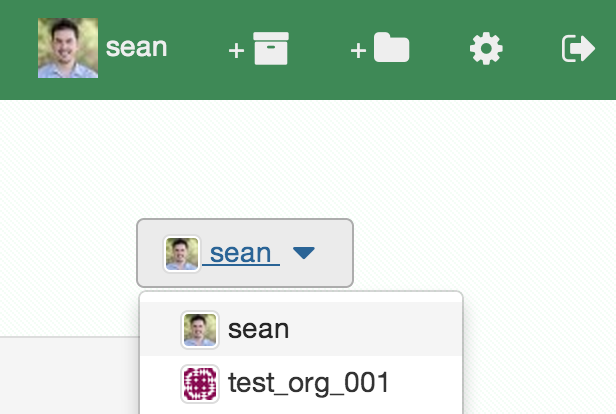

{% from "macros.j2" import section, subsection %}
{% extends "layout.html" %}
{% block main %}
{% call section('creating-an-organization') %}
[Create a new organization](https://binstar.org/new/organization)
{% endcall %}
{% call section('managing-an-organization') %}
## Managing an organization
### Dashboard
You can view your organization's by navigating to:
* https://binstar.org/organization/:OrgName/dashboard
Or by navigating to the [binstar.org](https://binstar.org) and selecting the org dropdown on the upper right.

You can manage your organization's settings by navigating to:
* https://binstar.org/organization/:OrgName/settings/profile
Or by navigating to [your settings](https://binstar.org/settings) and selecting the org dropdown on the upper right.
## Groups and Access
### Owners
All organization owners have full access to the organization settings and all packages
To give other users ownership navigate to the groups settings page and add them:


## Command line client
To upload packages to your org account *'OrgName'* from the command line you must now use the '-u/--user' option:
$ binstar login
Username: your-personal-account
your-personal-account's Password: ******
$ binstar upload -u OrgName ... package.tar
{% endcall %}
{% endblock %}